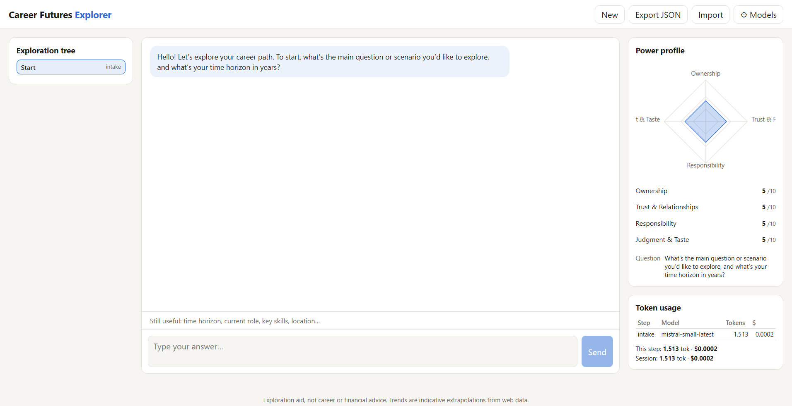

01 · KNOW WHERE YOU STAND
A short chat records your question, role, skills, location and time horizon. Then you get a power profile with four axes, each scored out of 10.
Ownership
What you own, vs. selling your time
Trust & Relationships
A network nobody can copy
Responsibility
Signing off and being accountable, which AI can’t do
Judgment & Taste
Knowing what matters, and saying no

My scenario
IT teacher (Fachinformatiker training), Germany: “What should I excel in to stand out as AI changes the job market?”